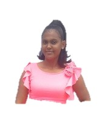

Ana Isabel Alcántara Montes de Oca
"Soy Ana Isabel Alcántara Montes de Oca, y nací el 12 de octubre del año(ME LO RESERVO) en Cansino Adentro.
Desde temprana edad, enfrenté desafíos debido a la salud de mi madre, Ana Luisa Montes de Oca, y mi padre, Santo Alcántara.
A pesar de estos obstáculos, siempre he sido una persona decidida.
Mis primeros años transcurrieron en Cansino Adentro, donde asistí a la Escuela Básica Santiago Hirujo Sosa.
Durante mi educación secundaria, opté por la educación sabatina mientras continuaba desafiándome académicamente.
Mi pasión por la informática me llevó a seguir una carrera en este campo, y actualmente estoy cursando la Licenciatura en Informática,
centrándome en el desarrollo de aplicaciones de back end con Java. Soy conocida por mi habilidad para resolver problemas complejos de manera creativa.
Además de mi interés en la tecnología, soy una mujer de Fe y pertenezco a la Iglesia Evangélica, donde encuentro inspiración espiritual.
Me encanta escribir y tengo un blog donde comparto mis pensamientos y emociones, especialmente en temas románticos y reflexivos.
Pueden explorar mi blog haciendo clic en este enlace: blog personal
En mi vida personal, celebro ocho años de matrimonio con mi esposo, Dawrin Carrasco, un sargento de la Marina de Guerra.
Juntos, enfrentamos valientemente los desafíos de la vida militar y familiar y somos padres de dos niñas y un niño.
Creo firmemente que todo es posible con determinación, fe y dedicación.
Mi historia es un testimonio de cómo la perseverancia puede llevar al éxito en todas las áreas que nos determinemos.
Como siempre digo: 'Todo lo que nos proponemos, con determinación, lo vamos a lograr'."